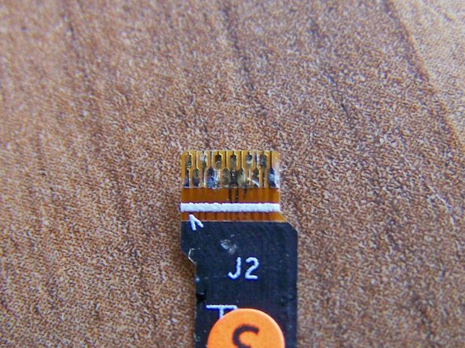
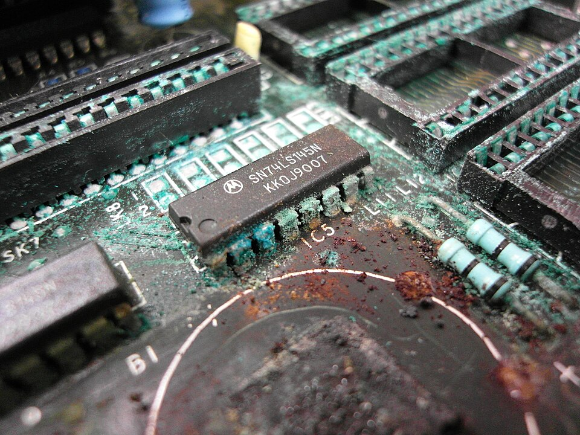

How liquid exposure damages electronics
Connect visible residue to possible faults, understand why moisture can cause intermittent failures, and choose what to document before anyone applies power.
Follow the liquid to the vulnerable materials
A battery, connector or PCB can still carry voltage after you turn the device off at the screen. Liquid can travel through a port or seam and wick into closely spaced surfaces such as a flex connector or the gap beneath a shield. The visible wet edge can be some distance from the most affected pins.
Tap water, perspiration and seawater contain dissolved ions that conduct electricity. A sweet drink can leave sticky residue and dissolved salts or acids. A leak from an older battery has its own chemistry and needs to be handled according to that battery type. Different contaminants can leave different deposits. A dry-looking outside or a single colour is weak evidence about the electrical state inside.

Photo by Adam O’Camb and iFixit contributors, with on-page callouts. Original photo · CC BY-NC-SA 3.0.

Photo by Binarysequence, scaled with on-page callouts. Original photo · CC BY-SA 3.0.

Three ways the same spill becomes an electrical fault
Watch. Identify the corrosion in the close-ups. Compare the affected conductors with the photographs above. iFixit and Jessa Jones on water damage and corrosion.
| Failure | What changed | Possible evidence |
|---|---|---|
| Leakage | A conductive film creates a parallel path, drawing a small current between nodes. Reabsorbed humidity can change the leakage. | A high-impedance button or sensor input moves towards the wrong voltage or fails only in damp conditions. |
| Open or high-resistance contact | Pads, plating or traces deteriorate. A contact still carries some current until the load increases. | A camera or speaker drops out when the flex moves. A discoloured pin localises inspection but needs electrical confirmation. |
| Short | Conductive liquid or a bridge couples pins or nets that should be isolated. With moisture, bias and the right chemistry, metal can migrate and grow conductive dendrites. | A known rail shows an unexpectedly low reading against a comparable board in the same cold-test state. Check the schematic and normal rail resistance first. |
Work a leakage example
Imagine a dry 1.8 V logic input with a 100 kΩ pull-up. A 220 kΩ leakage path to ground makes a divider. The input now sees 1.8 × 220 ÷ (100 + 220) ≈ 1.24 V. At about 5.6 µA, that tiny current may matter if it brings the input below its guaranteed high threshold. Whether the state is valid depends on its datasheet. A continuity beep would generally miss a 220 kΩ path.
What if the leakage path drops to 47 kΩ?
The input would fall to 1.8 × 47 ÷ (100 + 47) ≈ 0.58 V. Compare this with both the guaranteed high and low thresholds. It can be useful to reproduce this voltage divider with ordinary resistors on a separate low-voltage breadboard instead of introducing moisture.
Make a cold observation you can defend
In a dry, previously isolated practice donor, use a loupe to draw a map of seams, flex connectors, shields and deposits. Where a service guide permits cold measurements, compare equivalent points on a known-good board of the same revision. Record probe polarity, range, reading and where you referenced the probes. Capacitors, semiconductors and parallel circuit paths can affect this reading. A healthy low-impedance power rail can read quite low on its own.
Battery condition and the value of the stored data determine the next authorised step. A visibly damaged lithium battery ends routine handling. A repair that erases the phone or replaces its original board can lose access to local encrypted files, so confirm data priorities before work. See P86 intake of a liquid-exposed device and T28 lithium batteries.
For an industry test of this mechanism, see how humidity, bias and surface contamination are evaluated with surface insulation resistance measurements. National Physical Laboratory.